Equipo patata presenta...
Certificaciones Azure


Certificación Azure AZ-900

Descripción de la informatica en la nube
Definicion de informatica en la nube
La informatica en la nube es la prestacion de servicios informaticos (software, base de datos, servidores y conexiones a red), a traves de internet. Esto significa que los usuarios finales pueden acceder a software y aplicaciones desde cualquier punto donde se encuentren.
Descripcion del modelo de responsabilidad compartida
El modelo de responsabilidad compartida son las preocupaciones de seguridad que enfrenta el proveedor independientemente del modelo de servicio y las preocupaciones de seguridad que enfrenta el cliente que utiliza el servicio en la nube La seguridad de la nube es responsabilidad del CSP, y la seguridad en la nube es de los clientes
Definición de modelos de nube, incluidos públicos, privados e híbridos
Un modelo de implementacion en la nube es una “configuracion” de los parametros del entorno de la nube, como el tamaño de almacenamiento, la accesibilidad y el propietario.
Existen tres modelos principales:
- Nube pública
- La nube publica esta disponible para todo el mundo y los datos se almacenan en servidores de terceros como podria ser los servidores de Azure
- Una ventaja podria ser que los clientes no compran su propio hardware (servidores)
- Una desventaja es que los datos se almacenan en servidores externos y no sabemos donde se guardan los datos y quien tiene acceso a ellos.
- Nube privada
- La nube privada solo esta disponible para una empresa, los datos se almacenan dentro del firewall
- Una ventaja es que solo un conjunto de personas tienen el permiso para acceder a los datos
- Nube hibrida
- La nube hibrida utiliza las nubes privadas para almacenar los datos mas sensibles y nubes publicas para las menos sensibles
- Este modelo solo lo implementan las compañias que suelen dividir sus datos.

Identificación de los casos de uso adecuados para cada modelo de nube
- Las nubes publicas:
- Aplicaciones web, sitios estaticos, desarrollo y pruebas, big data y analisis, aplicaciones de IoT
- ofrece escalabilidad y recursos compartidos
- Las nubes privadas:
- Industrias reguladas, cargas de trabajo críticas, seguridad sensible y aplicaciones personalizadas o heredadas
- Proporciona mayor control y seguridad
- Las nubes híbridas:
- Útil para cargas de trabajo con escalabilidad variable, recuperación ante desastres, seguridad y aplicaciones que requieren baja latencia
- Combina las caracteristicas de las nubes publicas y privadas
Descripción del modelo basado en el consumo
El modelo basado en el consumo es un enfoque en el cual los recursos informaticos se utilizan según la demanda y se pagan en funcion del uso.
En lugar de pagar por recursos fijos o capacidades preestablecidas, los clientes pagan solo por los recursos que realmente consumen.
Comparación de los modelos de precios en la nube
| Servicio/Proveedor | AWS | Azure | GCP |
|---|---|---|---|
Computación (VM) |
|||
| Instancia EC2 (por hora) | Desde $0.01 | Desde $0.008 | Desde $0.006 |
Almacenamiento |
|||
| Almacenamiento S3 (por GB/mes) | Alrededor de $0.023 | Alrededor de $0.0185 | Alrededor de $0.2 |
| Almacenamiento de Blobs (por GB/mes) | Alrededor de $0.03 | Alrededor de $0.03 | Alrededor de $0.026 |
Descripción de la informática sin servidor (FaaS)
Se trata de un modelo de desarrollo directamente en la nube sin la necesidad de gestionar servidores.
En lugar de tener que gestionar servidores todo el tiempo, escriben funciones que se ejecutan solo cuando se necesitan, en respuesta a eventos específicos.
Las funciones se ejecutan en respuesta a eventos como solicitudes web o cambios en la base de datos.
Descripción de las ventajas de usar servicios en la nube
- Descripción de las ventajas de la alta disponibilidad y la escalabilidad en la nube
- Descripción de las ventajas de la confiabilidad y la previsibilidad en la nube
- Descripción de las ventajas de la seguridad y la gobernanza en la nube
- Descripción de las ventajas de la capacidad de administración en la nube
Descripción de las ventajas de la alta disponibilidad y la escalabilidad en la nube
Descripción de las ventajas de la confiabilidad y la previsibilidad en la nube
La confiabilidad es lo que permite darnos la seguridad ante un possible error u otro tipo de acciones al 99%.
La previsibilidad se centra darnos una experiencia positiva.
Descripción de las ventajas de la seguridad y la gobernanza en la nube
La seguridad en la nube tiene el fin de garantizar la protección de los datos.

La gobernanza de la nube es un conjunto de reglas, procesos e informes que guían a su organización a seguir las prácticas recomendadas.
Descripción de las ventajas de la capacidad de administración en la nube
La administración en la nube es un proceso de mantener el control de la infraestructura, los recursos y los servicios de computación en la nube en entornos de nube.
Descripción de los tipos de servicio en la nube
- Descripción de la infraestructura como servicio (Iaas)
- Descripción de la plataforma como servicio (PaaS)
- Descripción del software como servicio (SaaS)
Descripción de la infraestructura como servicio (Iaas)
Un ejemplo claro que tenemos es Pc componentes.
Descripción de la plataforma como servicio (PaaS)
Consiste es un entorno en la nube integral que incluye todo lo que los desarrolladores necesitan para crear, ejecutar y gestionar aplicaciones, desde servidores y sistemas operativos hasta redes, almacenamiento, middleware, herramientas y más.
Un ejemplo claro que tenemos es Google Workspace , basicamente pagamos por una plataforma que contiene ciertas aplicaciones como el drive o el correo electronico y otras herramientas de colaboración.
- 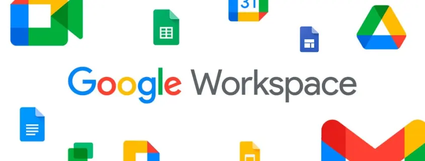
Otro ejemplo claro que tenemos es Microsoft Azure App Service , basicamente tambien pagamos por una plataforma que nos aporta crear y alojar aplicaciones web, back-ends móviles y API RESTful en el lenguaje de programación que sea sin tener que administrar la infraestructura.
Descripción del software como servicio (SaaS)
Es un modelo de software basado en la nube que ofrece aplicaciones a los usuarios finales a través de un navegador de Internet.
Un ejemplo claro que tenemos es netflix, basicamente lo que se hace es alquilar mensualmente o anuealmente un software a provedores de servicios externos.
Otro ejemplo claro que tenemos es Dazn, basicamente lo que se hace es alquilar mensualmente o anuealmente un software a provedores de servicios externos.
Descripción de los principales componentes arquitectónicos de Azure
- Describir las regiones de Azure, los pares de regiones y las regiones soberanas
- Describir las zonas de disponibilidad
- Describir los centros de datos de Azure
- Descripción de los recursos y grupos de recursos de Azure
- Describir las suscripciones
- Describir los grupos de administración
Describir las regiones de Azure, los pares de regiones y las regiones soberanas
Hay muchas regiones en todos los continentes que proporcionan alta disponibilidad para proteger las aplicaciones y los datos frente a errores del centro de datos.
- 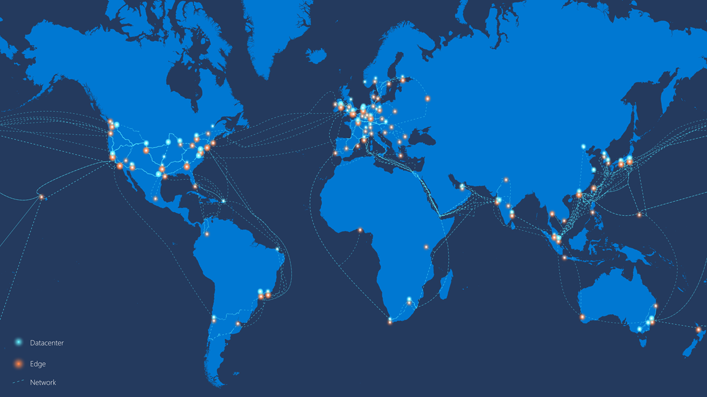
Las regiones soberanas son Azure China 21Vianet y Azure Government - EE. UU.
Describir las zonas de disponibilidad
Las zonas de disponibilidad son grupos separados de centros de datos dentro de una región. Las zonas de disponibilidad están lo suficientemente cerca para tener conexiones de baja latencia a otras zonas de disponibilidad.
Describir los centros de datos de Azure
Un centro de datos de Azure basicamente es un edificio muy grande en el que se encuentran ubicados los equipos informáticos necesarios para procesar y almacenar toda la información de un negocio.
Descripción de los recursos y grupos de recursos de Azure
Los recursos son elementos administrables que están disponibles a través de Azure.
Un grupo de recursos es un contenedor que almacena los recursos relacionados con una solución de Azure.
- 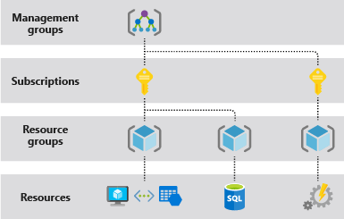
Describir las suscripciones
Las suscripciones de Azure son una agrupación de recursos con un propietario asignado que es responsable de la facturación y de la administración de los permisos.
- 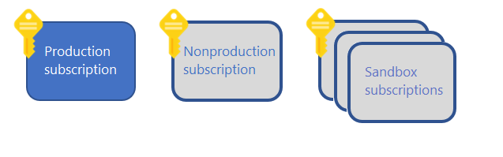
Describir los grupos de administración
Los grupos de administración son contenedores que ayudan a administran el acceso, las directivas y el cumplimiento de varias suscripciones.
- 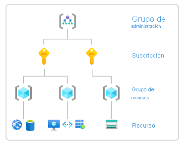
Descripcion de los servicios de proceso y redes de Azure
Comparación de los tipos de proceso, incluidos los contenedores, las máquinas virtuales y las funciones
Máquinas Virtuales (VMs):
Este servicio proporciona maquinas virtuales en la nube
- 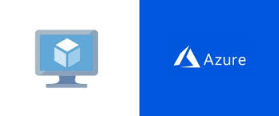
Azure Kubernetes Service (AKS):
Este servicio simplifica la implementacion y administracion de aplicaciones en contenedores
- 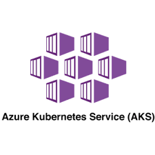
Azure Container Instances (ACI):
Permite ejecutar contenedores sin tener que gestionar la infraestructura subyacente.

Azure App Service:
Proporciona una plataforma completamente administrada para el desarrollo, la implementación y la escalabilidad de aplicaciones web.
Descripción de las opciones de máquina virtual, como Azure Virtual Machines, Azure Virtual Machine Scale Sets, conjuntos de disponibilidad y Azure Virtual Desktop
Azure Virtual Machines (VM):
son máquinas virtuales flexibles que se ejecutan en la nube de Microsoft Azure.
Azure Virtual Machine Scale Sets:
Permite implementar y administrar un conjunto de maquinas virtuales identicas. Estos se escalan automaticamente según la carga de trabajo.
Conjuntos de disponibilidad (Availability Sets):
Estos ayudan a garantizar la alta disponibilidad y la toleranciaa a fallos de las aplicaciones que se ejecutan en las maquinas virtuales: Estan diseñados para distribuir las maquinas de una manera en la que reduzca el riesgo de fallos
Descripción de los recursos necesarios para las máquinas virtuales
Depende del uso al que le vayas a dar a la maquinas virtuales.
Por ejemplo, las MV Serie A las mas usadas son:
| Serie A | Configuración de CPU: | Configuración de Memoria: | Almacenamiento: |
|---|---|---|---|
| Standard_A2 | Núcleos de CPU: 2. | RAM: 4 GB. | Disco Temporal: 20 GB (SSD). |
| Standard_A4 | Núcleos de CPU: 8. | RAM: 14 GB. | Disco Temporal: 40 GB (SSD). |
| Standard_A8 | Núcleos de CPU: 8. | RAM: 56 GB. | Disco Temporal: 160 GB (SSD). |
De las Series B son:
| Serie B | Configuración de CPU: | Configuración de Memoria: | Almacenamiento: |
|---|---|---|---|
| Standard_B2s | Núcleos de CPU: 2. | RAM: 4 GB. | Disco Temporal: 16 GB (SSD). |
| Standard_B4ms | Núcleos de CPU: 4. | RAM: 16 GB. | Disco Temporal: 32 GB (SSD). |
| Standard_B8ms | Núcleos de CPU: 8. | RAM: 32 GB. | Disco Temporal: 64 GB (SSD). |
De las Serie F son:
| Serie F | Configuración de CPU: | Configuración de Memoria: | Almacenamiento: |
|---|---|---|---|
| Standard_F4s | Núcleos de CPU: 4. | RAM: 8 GB. | Disco Temporal: 32 GB (SSD). |
| Standard_F8s | Núcleos de CPU: 8. | RAM: 16 GB. | Disco Temporal: 64 GB (SSD). |
| Standard_F16s | Núcleos de CPU: 16. | RAM: 32 GB. | Disco Temporal: 128 GB (SSD). |
Descripción de las opciones de hospedaje de aplicaciones, incluidas las aplicaciones web, los contenedores y las máquinas virtuales
Azure proporciona diferentes formas de hospedar y ejecutar las aplicaciones en funcion de sus necesidades.
De las que mas se utilizan son:
- Azure App Service
- Azure Functions
- Azure Kubernetes Service (AKS)
- Azure Virtual Machines (VMs)
- Azure Batch
Una opcion de hospedaje que nos deberia ser familiar es: (VMs).
Que son maquinas virtuales en la nube.

Descripción de las redes virtuales, incluido el propósito de Azure Virtual Networks, las subredes virtuales de Azure, el emparejamiento, Azure DNS, VPN Gateway y ExpressRoute
Azure Virtual Networks (Redes Virtuales de Azure):
Es un servicio de azure que permite crear redes privadas en la nube, proporciona aislamiento de recursos, control sobre la conectividad y una extension de la infraestructura de red local a la nube
Subredes virtuales de Azure:
puedes dividir las redes en subredes para organizar y segmentar los recursos dentro de la virtualNet.
Emparejamiento de Red (VNet Peering):
permite conectar dos virtualNets dentro de la misma region de azure, esto facilita la comunicación directa entre recursos de VNets emparejadas ( como si estuviesen en la misma red)
Azure DNS:
Este servicio proporciona nombres de dominio en la nube.
VPN Gateway:
Este servicio permite establecer conexiones seguras y cifradas entre redes locales y redes virtuales de azure
ExpressRoute:
Este servicio permite una conexión desde la infraestructura local hasta Microsoft, para tener una conexion mas rapida, mas fiable y con menor lllatencia en comparacion a el acceso publico a traves de internet
Definir puntos de conexión públicos y privados
Puntos de conexión públicos:
Son como se exponen los servicios y recursos a través de la Internet pública. Los usuarios y aplicaciones pueden acceder a estos servicios utilizando direcciones IP públicas
Ejemplo:
Un sitio web público hospedado en Azure App Service con una dirección URL accesible desde Internet
Puntos de conexión Privados:
Se refiere a la configuración de servicios y recursos para que solo sean accesibles desde redes privadas
Ejemplo:
Una base de datos en Azure configurada con un punto de conexión privado solo accesible desde dentro de una red virtual específica
Descripción de los servicios de almacenamiento de Azure
- Comparación de los servicios de almacenamiento de Azure
- Descripción de los niveles de almacenamiento
- Descripción de las opciones de redundancia
- Descripción de las opciones de la cuenta de almacenamiento y los tipos de almacenamiento
- Identificación de opciones para mover archivos, incluidos AzCopy, Explorador de Azure Storage y Azure File Sync
- Descripción de las opciones de migración, incluidas Azure Migrate y Azure Data Box
Comparación de los servicios de almacenamiento de Azure
Si comparamos los servicios de almacenamiento de Azure por ejemplo con los de AWS básicamente es que Amazon tiene una mayor cuota de mercado en la nube que Azure. AWS ofrece más productos y servicios en la nube que Azure.
Descripción de los niveles de almacenamiento
Los niveles de almacenamiento se usan para que pueda almacenar los datos de blobs de la manera más rentable en función de cómo se usen.
Descripción de las opciones de redundancia
Las opciones de redundancia garantiza que tus datos estarán disponibles incluso durante una interrupción regional.
En caso de interrupción se podra conectar a otra zona cercana.

Descripción de las opciones de la cuenta de almacenamiento y los tipos de almacenamiento
La cuenta de almacenamiento proporciona un espacio de nombres único para los datos de Azure Storage que es accesible desde cualquier lugar del mundo mediante HTTP o HTTPS.
Tipos de almacenamiento:
- Almacenamiento de archivos para acceso distribuido.
- Streaming de audio y vídeo.
- Almacenamiento de datos para copia de seguridad y restauración, recuperación ante desastres y archivado.
- Almacenamiento de datos para el análisis en local o en un servicio hospedado de Azure.
Identificación de opciones para mover archivos, incluidos AzCopy, Explorador de Azure Storage y Azure File Sync
Azure File Sync transforma Windows Server en una caché rápida de los recursos compartidos de archivos de Azure.
Explorador de Azure Storage nos permite buscar cualquier tipo de archivo de azure.
Azure File Sync permite la sincronización de Windows Server con un recurso compartido de archivos de Azure.
Descripción de las opciones de migración, incluidas Azure Migrate y Azure Data Box
La migracion a la nube es el proceso de mover las aplicaciones y los datos desde una ubicación.
Azure Migrate proporciona un centro de conectividad para realizar el seguimiento de la detección, evaluación y migración a Azure de las aplicaciones y cargas de trabajo locales.
Azure Data Box Gateway es una solución de almacenamiento que permite enviar fácilmente datos a Azure.
Descripción de la identidad, el acceso y la seguridad de Azure
Descripción de los servicios de directorio en Azure, incluidos Microsoft Entra ID y Microsoft Entra Domain Services
Microsoft Entra ID es una solución de gestión de acceso e identidad basada en la nube. Microsoft Entra Domain Services proporciona servicios de dominio a directorios (LDAP) y autenticación Kerberos/NTLM.
Descripción de los métodos de autenticación en Azure, incluido el inicio de sesión único (SSO),la autenticación multifactor (MFA) y la autenticación sin contraseña
El SSO es un proceso de autenticación de usuarios que ahorra tiempo y es muy seguro.
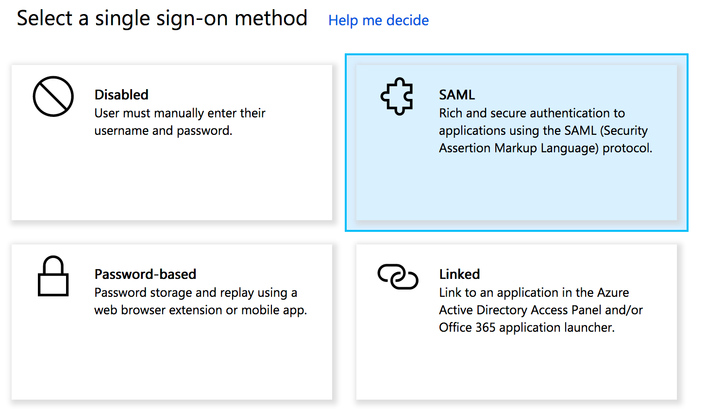
MFA es un proceso de autentificación que agrega una capa de protección al proceso de inicio de sesión.
La autentificación sin contraseña nos permite iniciar sesión sin tener que poner contraseña y pudiendo poner otro tipo de método de acceso como acceso biometrico.
Descripción de las identidades externas de Azure, incluidas las de negocio a negocio (B2B) y de negocio a cliente (B2C)
El B2B es una colaboración de Microsoft Entra que permite compartir de forma segura las aplicaciones y los servicios de su empresa con usuarios.
El B2C es una solución de administración de acceso a las identidades de los clientes (CIAM) que permite que los clientes se registren e inicien sesión en sus aplicaciones.
Describir el acceso condicional de Microsoft Entra
Es una herramienta que ayuda a organizaciones a controlar cómo los usuarios acceden a los recursos.
Describir el control de acceso basado en roles (RBAC) de Azure
RBACes una función de seguridad para controlar el acceso de usuarios a tareas que están restringidas al superusuario.
Descripción del concepto de Confianza cero
Es una estrategia de alto nivel que supone que las personas, los dispositivos y los servicios que intentan acceder a los recursos de la empresa, incluso aquellos dentro de la red, no son automáticamente de confianza.
Descripción del propósito del modelo de defensa en profundidad
Basicamente consiste en usar varias medidas de seguridad para proteger la integridad de la información de Azure.

Descripción del propósito de Microsoft Defender for Cloud
Proporciona información general sobre los ataques, eventos sospechosos y malintencionados que se producen en entornos en la nube.
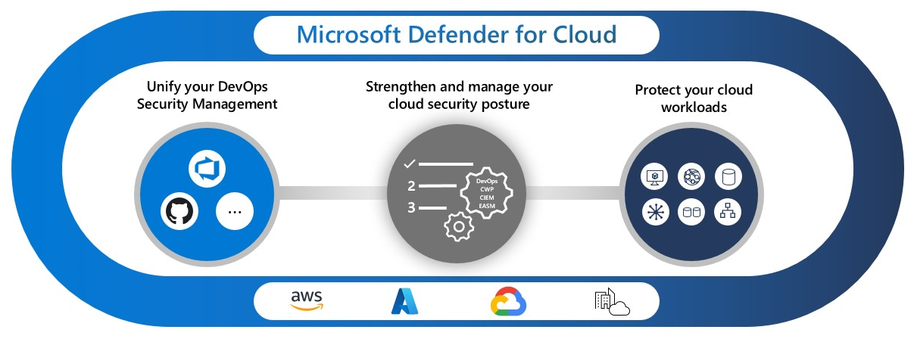
Descripción de la administración de costos en Azure
Descripción de los factores que pueden afectar a los costos en Azure
Los cuatro principales factores de los costos son:
- Desventajas de optimización de costos con confiabilidad
- Desventajas de optimización de costos con seguridad
- Desventajas de optimización de costos con excelencia operativa
- Desventajas de optimización de costos con eficiencia del rendimiento
Comparación de la calculadora de precios y la calculadora del costo total de propiedad (TCO)
La calculadora de precios calcula el costo del clúster mientras que la TCO se encarga de evaluar los costes y beneficios directos e indirectos relacionados con la compra de cualquier componente de IT.
Descripción de la funcion de administración de costos de Azure
Es el proceso en el que se planifican y controlan eficazmente los costos implicados en su negocio.
Descripción de la finalidad de las etiquetas
La finalización de las etiquetas es ayudar a identificar los recursos en función de la configuración que sean importantes para su organización.
Descripción de las características y herramientas de Azure para la gobernanza y el cumplimiento
Descripción del propósito de Microsoft Purview en Azure
Microsoft purview tiene como objetivo proporcionar una solucion integral para la gestion, descubrimiento y gobierno de datos en las organizaciones, para facilitar la toma de decisiones.
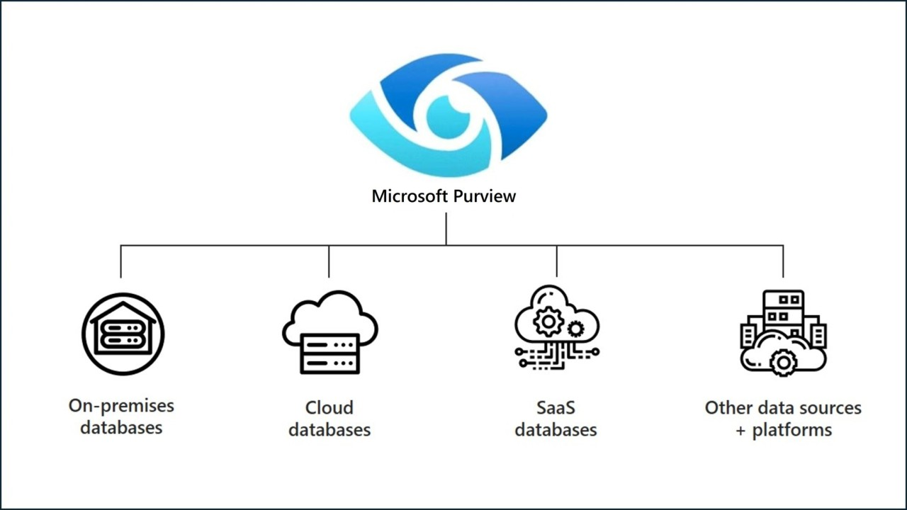
Describir el propósito de Azure Policy
El principal proposito de Azure Policy es aplicar, auditar y garantizar que que se cumplen las politicas en nuestros recursos de la nube.

Describir el propósito de bloqueos de recursos
Los bloqueos de recursos de Azure tiene como proposito evitar la modificacion accidental o la eliminacion de recursos criticos en nuestro entorno en la nube.
Descripción de las características y herramientas para administrar e implementar recursos de Azure
Descripción de Azure Portal
Azure portal es la interfaz web principal para administrar recursos y servicios en la plataforma de azure. Además, ofrece una una interfaz intuitiva y fácil de usar para usuarios de diferentes niveles de experencia.

Descripción de Azure Cloud Shell, incluida la Interfaz de la línea de comandos de Azure (CLI) de Azure y Azure PowerShell
Azure Cloud Shell
Es un entorno basado en la nube que permite a los usuarios utilizar los servicios de azure powershell o azure CLI sin necesidad de instalarlas en nuestras maquinas locales.
CLI
Es una herramienta de lineas de comandos que permite a los usuarios interactuar con los servicios y recursos de Microsoft de Azure mediante comandos de texto.
Los usuarios necesitan instalar la herramientas en su entorno local y registrarse con su cuenta de azure
Azure PowerShell
Es un conjunto de modulos y comandos que permiten a los usuarios administrar y automatizar recursos en Microsoft Azure utilizando PowerShell.
Descripción del propósito de Azure Arc
Azure Arc es una tecnologia de microsoft que extiende la administracion y los servicios de azure mas alla del entorno de la nube pública.
Su principal próposito es permitir que las organizaciones puedan extender las capacidades de azure a sus entornos locales, multi-nube y de borde, para brindarles una administración y operación en todas su infraestructura.
Descripción de la infraestructura como código (IaC)
Es una metodología que transforma la forma en que se crea y gestiona la infraestructura utilizando código, brindando beneficios en términos de automatización, consistencia, escalabilidad y colaboración en el desarrollo y operación de sistemas.
Descripción de las plantillas de Azure Resource Manager (ARM) y ARM
Es el servicio de aprovisionamiento y gestión de recursos en la nube de Microsoft Azure.
Es un servicio que implementa plantillas, que son archivos JSON que definen la infraestructura y configuración de recursos que se implementarán en Azure.
Descripción de las herramientas de supervisión de Azure
Descripcion del propósito de Azure Advisor
Su propósito principal es ayudar a los usuarios a aprovechar al máximo sus inversiones en Azure, ofreciendo asesoramiento en áreas clave relacionadas con el rendimiento, la confiabilidad, la seguridad y los costos.
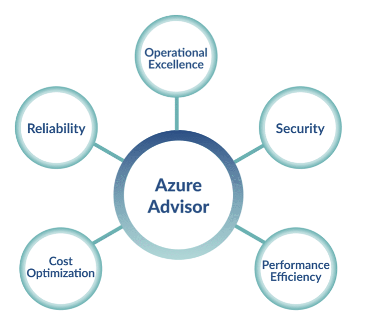
Descripcion de Azure Service Health
Es un servicio que te muestra en tiempo real como estan funcionando los servicios de Azure en todo el mundo.
Su objetivo principal es proporcionar a los usuarios y organizaciones una visibilidad instantánea y detallada sobre la integridad y el rendimiento de los servicios en la nube de Azure.
Descripcion de Azure Monitor, como Log Analytics, alertas de Azure Monitor y Application insights
Azure Monitor es un conjunto integral de servicios de supervisión que ayuda a los usuarios a obtener información detallada sobre el rendimiento, la disponibilidad y la eficiencia operativa de sus aplicaciones y servicios en la nube.
Log Analytics
Log Analytics es un servicio que recopila y analiza registros (logs) generados por los recursos de Azure y otras fuentes.
Su objetivo es proporcionar una visión centralizada de los datos de registros para poder buscar, analizar y identificar problemas en la nube.
Alertas de Azure Monitor
Las alertas de Azure Monitor permiten a los usuarios definir condiciones específicas y recibir notificaciones cuando esas condiciones se cumplen.
Estas permiten la detección temprana de problemas y la toma de medidas para la nube.
Application Insights
Application Insights se centra en la supervisión y el análisis del rendimiento de las aplicaciones..
Este servicio proporciona insights (información) detallados sobre cómo se comportan y funcionan las aplicaciones, identificando cuellos de botella, errores y patrones de uso.
Certificación Azure AZ-104
Describir las regiones de Azure, los pares de regiones y las regiones soberanas
¿Qué es y para que sirve?
Este examen mide su capacidad para realizar las siguientes tareas técnicas: administrar las identidades y la gobernanza de Azure; implementar y administrar el almacenamiento; implementar y administrar recursos de proceso de Azure; implementar y administrar redes virtuales; y supervisar y mantener los recursos de Azure.
Administrar usuarios y grupos de Microsoft Entra
- Creación de usuarios y grupos
- 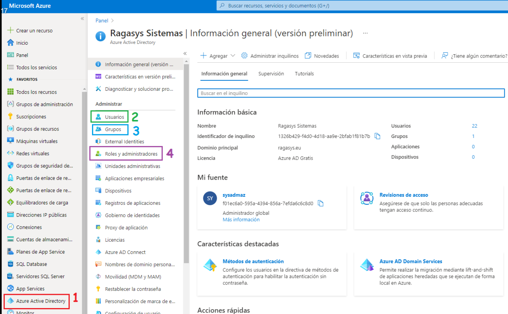
En nuestro Azure Active Directory podemos crear, añadir, eliminar y modificar los usuarios o grupos. Por ejemplo, en una empresa cada trabajador tiene su propio usuario y pertenecerá al grupo del departamento en el que trabaja.
El administrador podrá gestionar las propiedades que tendrá de cada grupo o usuarios, por ejemplo asignarle un nombre, contraseña, permisos, capetas compartidas, privilegios, tipos de grupos, etc.
Microsoft Entra ID es un servicio de administración de identidades y acceso basado en la nube que permite a los empleados acceder a recursos externos. Entre los recursos de ejemplo se incluyen Microsoft 365, Azure Portal y miles de otras aplicaciones SaaS.
El administrador puede asignar licencias a un grupo de usuarios que pertenecen a un departamento de una empresa, por ejemplo un grupo de seguridad en el que hay 1000 usuarios y le asigna licencias de Office 365 Enterprise E3 a todo el departamento. Después se debe comprobar en el apartado de licencias que se haya asignado correctamente.
En el caso de que indique en su estado que ha habido un error podemos ver más información la columna asignaciones erróneas. La columna Motivo principal del error contiene la causa del error. Puede que un usuario ya tenga una licencia que le asigna otro grupo al que pertenece y esta nueva licencia que le otorga otro grupo entra en conflicto. Habría que quitarlo del grupo anterior para que Microsoft Entra ID se la asigne correctamente.
La gestión de identidad y acceso (Control de acceso IAM) es un modo de saber quién es un usuario y qué tiene permiso para hacer. El administrador puede ponerle un rol, por ejemplo, de suscriptor a un usuario invitado y le dará los permisos que considere. Como que tenga acceso al un grupo específico.
A través de el email del invitado se le enviará la notificación de la invitación, una vez termine se debe eliminar al usuario invitado de la asignación de roles y de Microsoft Entra ID
SSPR permite a los usuarios restablecer su contraseña de forma segura usando los mismos métodos que usan para la autenticación multifactor de Microsoft Entra sin necesidad de que intervenga el administrador o soporte técnico.
En las propiedades dentro de protección tenemos la opción de restablecimiento de contraseña, si no está visible el grupo que queremos indicamos que “ninguno” y seleccionaremos el grupo de Microsoft Entra, como SSPR-Test-Group.
Luego en métodos de autentificación indicaremos el número de métodos queremos que use. Esta información la puede proporcionar el administrador o el usuario desde el portal de registro.
Administración del acceso de usuarios a los recursos de Azure
- Administración de roles de Azure integrados.
- 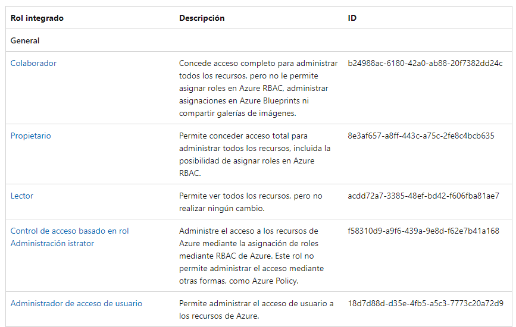
Las asignaciones de roles sirven para controlar el acceso a los recursos de Azure. El control de acceso se basa en el rol de Azure (Azure RBAC) tiene varios roles integrados de Azure que se pueden asignar a usuarios, grupos, entidades de servicio e identidades administradas.
Los roles integrados tienen unos permisos específicos para cada uno de ellos, si no satisfacen las necesidades concretas de la organización se pueden crear roles personalizados de Azure propios. Puede buscar permisos por palabra clave, como permisos de máquina virtual o de facturación. También puede descargar todos los permisos como un archivo CSV y, a continuación, buscar en este archivo.
Administración del acceso de usuarios a los recursos de Azure
- Administración de roles de Azure integrados.
Las asignaciones de roles sirven para controlar el acceso a los recursos de Azure. El control de acceso se basa en el rol de Azure (Azure RBAC) tiene varios roles integrados de Azure que se pueden asignar a usuarios, grupos, entidades de servicio e identidades administradas.
Los roles integrados tienen unos permisos específicos para cada uno de ellos, si no satisfacen las necesidades concretas de la organización se pueden crear roles personalizados de Azure propios.
Puede buscar permisos por palabra clave, como permisos de máquina virtual o de facturación. También puede descargar todos los permisos como un archivo CSV y, a continuación, buscar en este archivo.

- Asignación de roles en distintos ámbitos y Interpretación de las asignaciones de acceso.
Los roles otorgan ciertos permisos, los cuales se pueden aplicar también según un ámbito y no se asigne a todo inquilino. Los recursos a los que se aplica una asignación de funciones también es un ámbito.
- Ámbito Inquilino:
Los permisos o rol para una persona en concreto.
- Ámbito administrativo:
Otorgar un rol a una unidad administrativa, por ejemplo Departamento de soporte técnico.
- 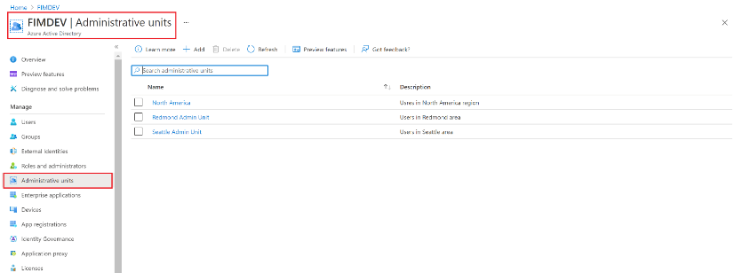

- Ámbito en la aplicación:
En este caso, hay que buscar la aplicación que deseamos y luego le aplicamos el rol, seleccionando a los usuarios o el grupo a los que se quiera asignar este rol.
- 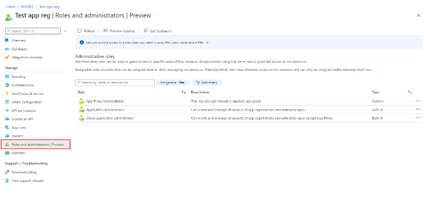
Implementación y administración de Azure Policy
Azure Policy es un servicio de microsoft que nos permite administrar políticas de gestión y garantizar que se cumplan. Estas políticas pueden estar referidas a medidas de seguridad o incluso gestión de costes y recursos.
- 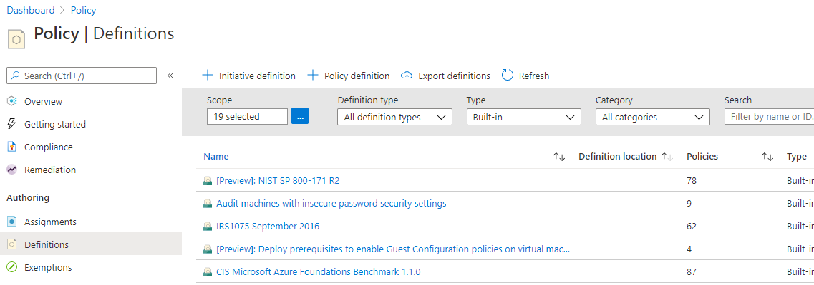
Configuración de bloqueos de recursos
Un administrador puede bloquear un recurso, grupo de recursos o suscripciones para que no puedan ser eliminados o modificados. Esto invalida los permisos que pueda tener un usuario. Esto podemos realizarlo a nivel gráfico añadiendo lo bloqueo a Eliminar y Solo Lectura. Y en línea de comandos se llama CanNotDelete y ReadOnly.
- 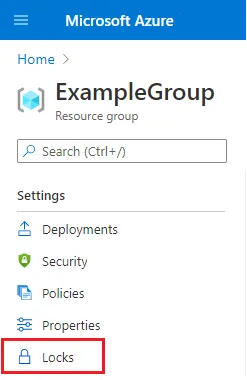
- 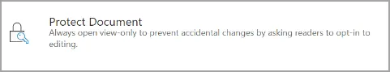
Aplicación y administración de etiquetas en recursos
Las etiquetas son elementos que nos permiten identificar, a modo organizativo, los recursos.
- 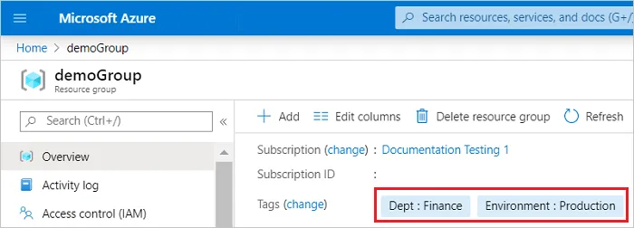
- 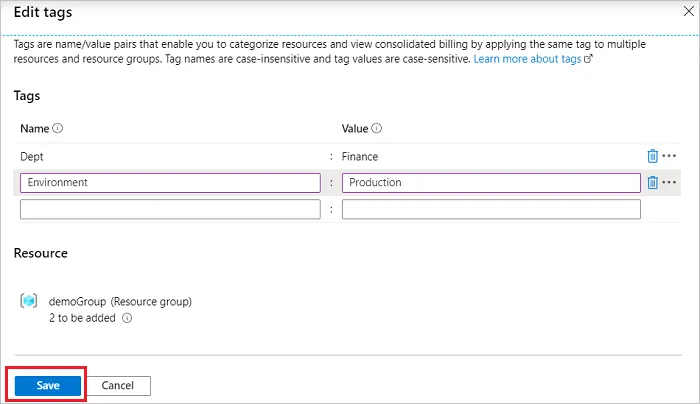
Administración de grupos de recursos
Un grupo de recursos nos permite almacenar de forma relacionada distintos recursos. Estos nos permiten ubicar los recursos en un mismo lugar.
- 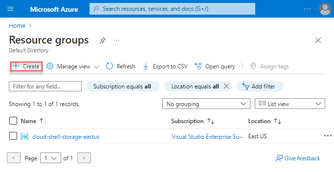
Administración de suscripciones
Las suscripciones permiten administrar y gestionar los servicios utilizados, permitiendo controlar los gastos, gestionar el acceso a los costos, organizar los recursos y mantener las políticas de la empresa, dentro de los límites definidos de facturación.
- 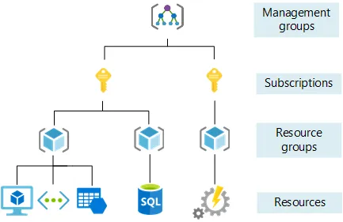
Planificación para administrar costos de Azure
Para calcular el coste de un servicio Azure podemos utilizar tres herramientas:
- Calculadora de precios de Azure
- Hoja de precios de Azure
- Portal de Azure
Calculadora de precios
- 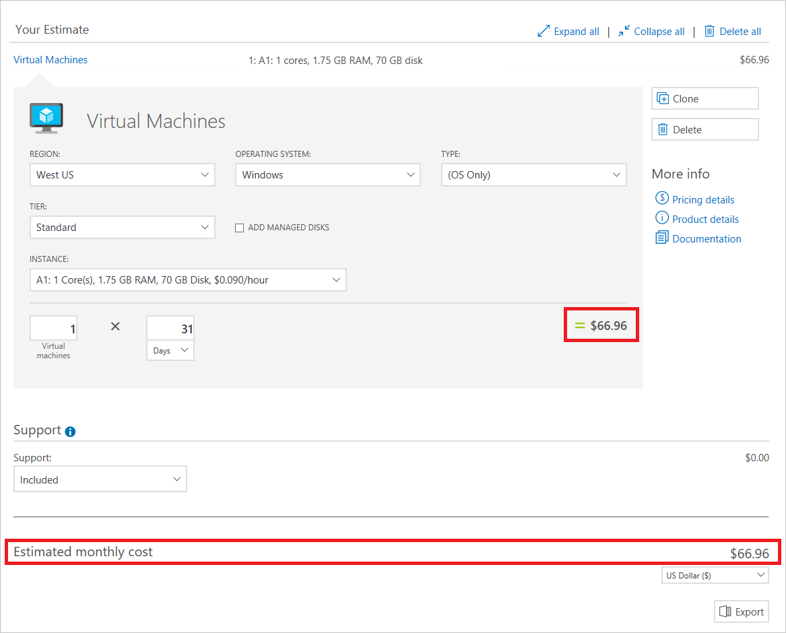
Hoja de precios Azure
- 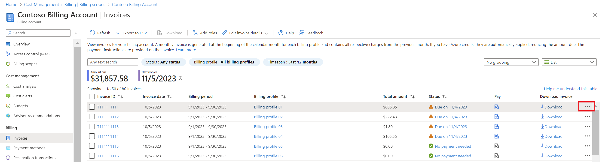
Portal de Azure
- 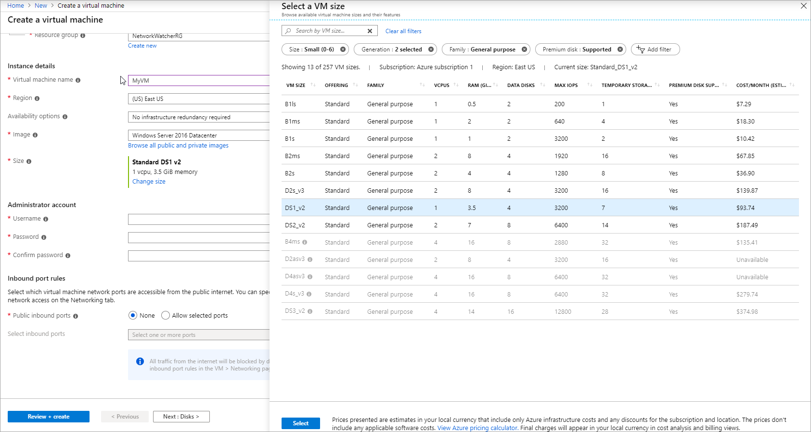
Supervisión de los costos de Azure
Para supervisar los costos podemos utilizar dos herramientas:
- Análisis de costos
- Alertas de presupuesto y de costos
Análisis de costos
- 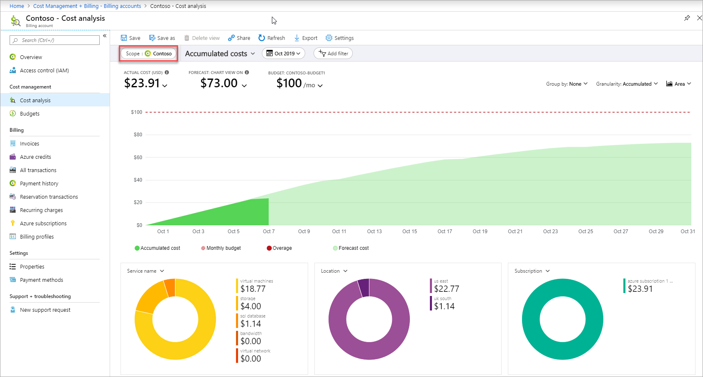
Alertas de presupuesto y de costos
- 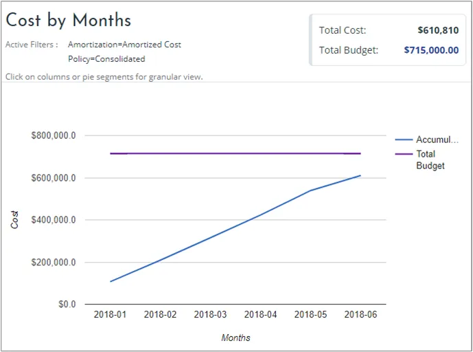
Facturación
- 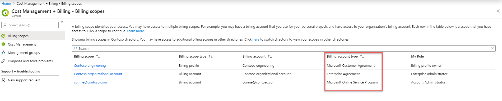
Grupos de administración de Azure
Los grupos de administración permiten aplicar directivas a un grupo. Estas directivas se aplicarían a las suscripciones y recursos anidados permitiendo únicamente realizar las tareas a los grupos permitidos.
- 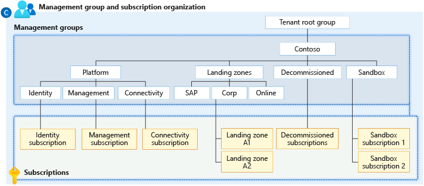
Configuración de redes virtuales y firewalls de Azure Storage
Permite configurar las reglas del firewall en tu cuenta de almacenamiento para permitir o denegar el acceso a determinadas direcciones IP o rangos de direcciones IP. Esto ayuda a asegurar que solo las aplicaciones o servicios específicos tengan acceso a tu almacenamiento.
- 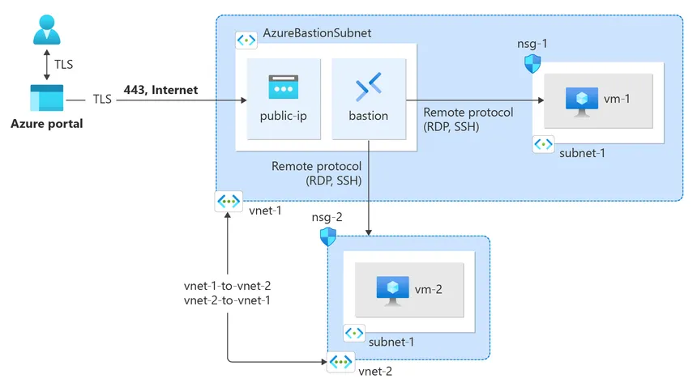
Creación y uso de tokens de firma de acceso compartido (SAS)
Los tokens de firma de acceso compartido son una forma segura de proporcionar acceso limitado y temporal a recursos de almacenamiento. Puedes generar SAS tokens para los servicios de almacenamiento y especificar permisos, duración y condiciones de acceso.
- 
Configuración de las directivas de acceso almacenadas
Permite utilizar directivas de acceso almacenadas para definir reglas de acceso que se aplican a todos tus contenedores o recursos de almacenamiento. Esto facilita la gestión de permisos y la implementación consistente de políticas de seguridad.
- 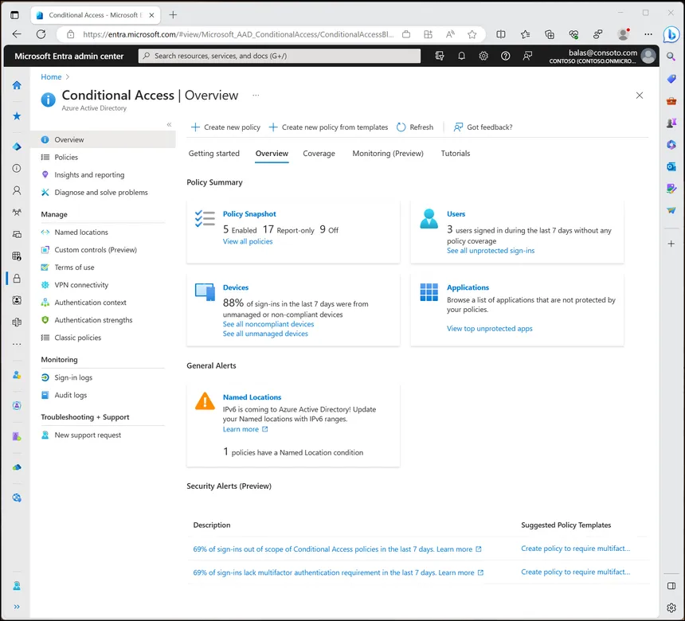
Administración de las claves de acceso
Una cuenta de Azure Storage usa como credenciales un nombre de cuenta y una clave. La clave se genera automáticamente y actúa como una contraseña y no como una clave criptográfica. Key Vault se utiliza para administrar las claves de la cuenta de almacenamiento, las regenera periódicamente en una cuenta de almacenamiento y proporciona tokens de firma de acceso compartido para el acceso delegado a los recursos de la cuenta de almacenamiento.
- 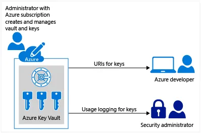
Configuración del acceso basado en identidad para Azure Files
El acceso basado en identidad para Azure Files es la capacidad de controlar y administrar el acceso a los archivos almacenados en Azure Files utilizando identidades de Azure Active Directory. Esto permite una gestión más segura y centralizada de los permisos de acceso.
Creación y configuración de cuentas de almacenamiento
Una cuenta de almacenamiento proporciona un espacio para almacenar datos de Azure Storage (tablas, archivos, etc) y poder acceder a ellos desde cualquier parte utilizando HTTP o HTTPS.
- 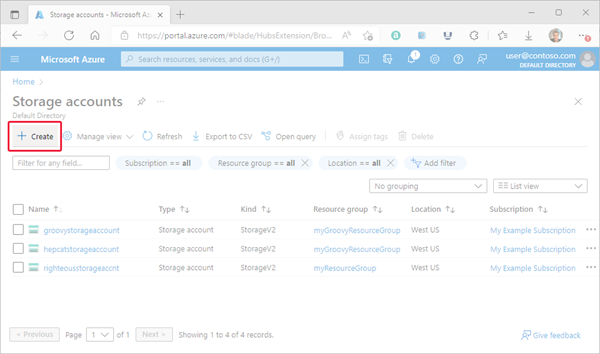
Redundancia de Azure Storage
La redundancia nos garantiza que la cuenta de almacenamiento no pierde los datos en caso de errores de hardware, interrupciones en la corriente eléctrica o desastres naturales. Esto lo consigue haciendo copias de seguridad.
Existen distintos tipos de redundancia:
- Redundancia en la región primaria. Replica 3 veces los datos en la región primaria. Cuando una aplicación requiere alta disponibilidad se almacena en una región secundaria.
Almacenamiento con redundancia local.
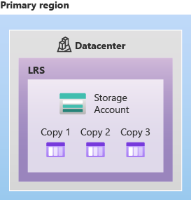Almacena de forma sincronizada los datos tres veces dentro de una única ubicación física. Es la opción más barata.
Almacenamiento con redundancia de zona.
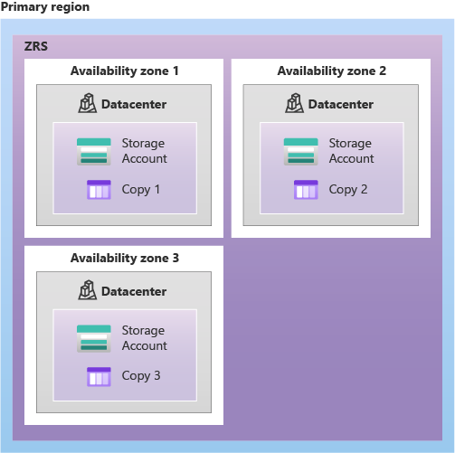Almacena los datos tres veces, pero en distintas zonas disponibles de Azure.
Redundancia en una región secundaria. Guarda una de las copias realizadas en la región principal en una región secundaria a muchos kilometros de distancia, así en caso de apagones generales o problemas a gran escala sigue estando disponible el recurso.
- 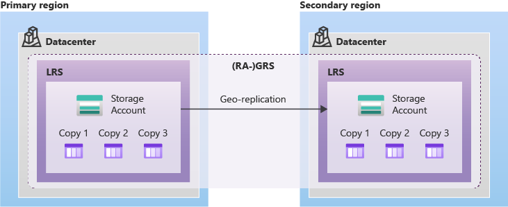
- 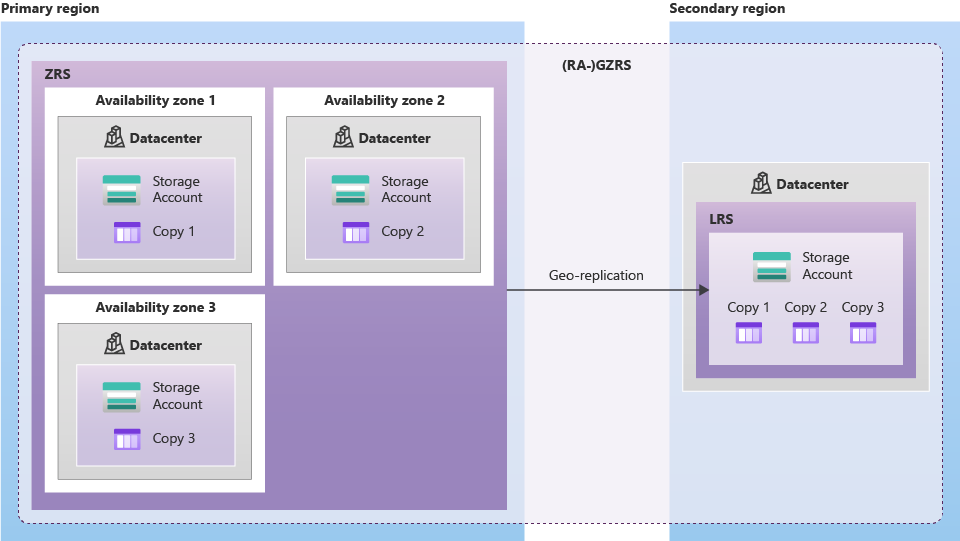
Cifrado de la cuenta de almacenamiento
Todos los datos de la cuenta de almacenamiento se cifran automáticamente. Al escoger el servicio de Azure nos permite elegir el tipo de algoritmo de cifrado.
Transferencia de datos a Azure Storage con AzCopy
Es una herramienta de línea de comandos que nos permite mover datos dentro y fuera de Azure Storage.

Implementación y administración del almacenamiento (15-20 %)(3º apartado)
Configuración de Azure Files y Azure Blob Storage
- Creación y configuración de un recurso compartido de archivos en Azure Storage
Azure Storage ofrece almacenamiento de alta disponibilidad, escalable de forma masiva, duradero y seguro para una gran variedad de objetos de datos en la nube. A los objetos de datos de Azure Storage se puede acceder desde cualquier lugar del mundo a través de HTTP o HTTPS por medio de una API REST.
Antes crear el recurso debemos saber:
- Cuáles son los requisitos de rendimiento para el recurso compartido de archivos de Azure.
- Cuáles son los requisitos de redundancia para el recurso compartido de archivos de Azure.
- Qué tamaño de recurso compartido de archivos necesita.
Los recursos compartidos de archivos de Azure se implementan en cuentas de almacenamiento, que son objetos de nivel superior que representan un grupo compartido de almacenamiento.
Los recursos compartidos de archivos estándar pueden implementarse en uno de los niveles estándar: optimizado para transacciones (valor predeterminado), acceso frecuente o acceso esporádico. Independientemente del nivel de acceso de blob.
- Nombre: nombre del recurso compartido de archivos que se va a crear.
- Nivel: nivel seleccionado para un recurso compartido de archivos estándar.
- Capacidad aprovisionada: solo para recursos compartidos de archivos prémium; la capacidad aprovisionada es la cantidad que se le facturará, independientemente del uso real.
- Copia de seguridad: la copia de seguridad se habilita/deshabilita al crear un recurso compartido de archivos de Azure mediante Azure Portal.
Niveles:
Grupos de recursos (Resource Groups): En Azure, los recursos se organizan y administran en grupos de recursos. Estos grupos permiten gestionar y organizar los recursos de manera lógica y eficiente. Los recursos dentro de un grupo de recursos pueden compartir ciertas propiedades y permisos.
- 1.Cuentas de almacenamiento (Storage Accounts): Azure ofrece cuentas de almacenamiento que pueden contener diversos tipos de datos, como blobs, archivos, tablas y colas. Los archivos almacenados en una cuenta de almacenamiento pueden ser compartidos a través de URL de acceso y configurando permisos de acceso.
- 2.Compartir recursos mediante permisos y roles: En Azure, los permisos de acceso y los roles desempeñan un papel crucial en la administración de recursos compartidos. Puedes asignar roles a usuarios, grupos o servicios para determinar qué acciones pueden realizar en los recursos de Azure.
- Creación y configuración de un contenedor en Blob Storage
Azure Blob Storage es para almacenamiento de objetos de Microsoft en la nube. Blob Storage está optimizado para el almacenamiento de cantidades masivas de datos no estructurados. Un "blob″ es la abreviatura de Objeto grande binario.
Primero creamos una suscripción para nuestra cuenta, indicamos la nube de Azure. Luego indicamos la cuenta Azure con la que queremos trabajar desde administrador de cuentas. Una vez cerramos la sesión nos muestra todas las cuentas de Azure Storage, así como del almacenamiento local que se configuró mediante el emulador de almacenamiento Azurite o los entornos de Azure Stack.
Seleccionamos el contenedor de blobs y creamos uno, le indicamos el nombre que queremos y luego ya aparecerá en la carpeta de contenedores.
Blob Storage admite blobs en bloques, blobs en anexos y blobs en páginas. Los blobs en anexos se utilizan para el registro, por ejemplo, cuando desea escribir en un archivo y luego sigue agregando más información. La mayoría de los archivos almacenados en Blob Storage son blobs en bloques.
Se pueden cargar archivos o carpetas y el tipo se Blob, en el campo ″Cargar en Carpeta″ le ponemos un nombre para la carpeta donde se guardarán los archivos que subamos. Si no, se subirán directamente al contenedor. Se irán cargando al contenedor de uno en uno, podemos verlo des de la ventana de Actividades.
Podemos visualizar los blobs de un contenedor seleccionando el contenedor de una cuenta.
También podemos descargar y guardarlo en una ubicación local.
- Configuración de las capas de almacenamiento.
Debemos tener en cuenta los factores a la hora de elegir la configuración del almacenamiento para mejorar su rendimiento y la resistencia de los datos. Si elegimos mal su clase de almacenamiento podemos poner en riesgo los datos, incluso una pérdida total en caso de error de hardware o puede dar lugar a un rendimiento menos óptimo.
Hay dos tipos:
- Almacenamiento local: almacenamiento aprovisionado en las unidades de disco duro local de un nodo determinado. Este tipo de almacenamiento puede ser idóneo en términos de rendimiento, pero requiere un diseño específico para la redundancia de datos mediante la replicación de los datos en varios nodos.
- Almacenamiento remoto compartido: almacenamiento aprovisionado en algún dispositivo de almacenamiento remoto (por ejemplo, un dispositivo SAN, NAS o un servicio de almacenamiento en la nube, como EBS o Azure Files). Este tipo de almacenamiento proporciona redundancia de datos automáticamente, pero generalmente no es tan rápido como puede serlo el almacenamiento local.
- Configuración de instantáneas y eliminación temporal para Azure Files
Podemos crear instantáneas de los blobs, para guardar su estado, también administrarlas en Administrar historial y Administrar instantáneas tendremos una lista que muestran las todas instantáneas .
Se pueden crear recursos compartidos, pero podemos indicar desde que hora y fecha estarán compartidos. También podemos eliminarlos de forma temporal habilitando la opción y luego el período de retención de recursos compartidos de archivos en días del 1 a 365 días, por lo que quedarán eliminados temporalmente.
En recurso compartido de archivos, habilitamos Show deleted shares (Mostrar recursos compartidos eliminados) para mostrar los recursos compartidos que se han eliminado temporalmente.
Desde aquí se puede seleccionar recuperar en el recurso, para que vuelva a restaurar el recurso compartido. Se puede deshabilitar la eliminación temporal.
- Configuración de la administración del ciclo de vida de los blobs
En Administración del ciclo de vida tenemos la opción habilitar el seguimiento de hora de acceso, indicará el último acceso al blob, podemos indicar el tiempo que estará accesible.
La administración del ciclo de vida de Azure Storage, basada en reglas que definen un conjunto de acciones que deben realizarse en función de si una condición se cumple o no.
Condiciones:
- Número de días desde que se creó el blob.
- Número de días desde que el blob se modificó por última vez.
- Número de días desde que se accedió al blob por última vez.
Por ejemplo , si se ha definido una acción para mover un blob de nivel de acceso frecuente al nivel de acceso esporádico si no se ha modificado durante 30 días.
- Configuración del control de versiones de blobs
La versión de un blob es como una instantánea del estado del blob, cuando se modifica un blob la versión actual pasa a ser una versión anterior.
Cuando se habilita, Azure Storage crea automáticamente una versión con un identificador único cuando se crea por primera vez un blob y cada vez que este se modifica posteriormente.
Puede usar la administración del ciclo de vida para eliminar automáticamente las versiones anteriores.
En Administración de datos, entramos a la pestaña de Protección de datos.
En la sección Seguimiento, seleccionamos Habilitar control de versiones para blobs, y después elegimos si quiere conservar todas las versiones o eliminarlas después de un período de tiempo.
En la pestaña de versiones podemos ver todas las versiones ordenadas por fecha, incluso ver las borradas temporalmente en el caso que esto esté habilitado. Se borraran de forma permanente cuando haya pasado el tiempo indicado.
Automatización de la implementación de recursos con plantillas de Azure Resource Manager (ARM) o archivos de Bicep
Interpretación de una plantilla de Azure Resource Manager o un archivo de Bicep
Las platillas de Azure Resource nos permiten implementar la infraestructura y configuración de un proyecto como código. En la plantilla se especifican los recursos que se van a implementar y sus propiedades.
Microsoft ha presentado otro lenguaje conocido como Bicep que ofrece unas capacidades similares a las plantillas pero con sintaxis mucho más fácil.
Este lenguaje tiene algunas ventajas:
- Compatibilidad.
- Sintaxis simple.
- Resultados repetibles: Se puede implementar el mismo archivo varias veces.
- Modularidad: puede dividir el código en módulos.
- Vista previa de cambios.
Creación y configuración de máquinas virtuales
Creación de una máquina virtual
Estas máquinas se crean desde Azure Portal. Accedemos a los Servicios > Máquinas virtuales.
En el lado derecho veremos un resumen del coste de los servicios que vamos seleccionando.
Configuración de Azure Disk Encryption
Azure Disk Encryption nos ayuda a proteger nuestros datos utilizando BitLocker para cifrarlos y se integra con Azure Key Vault el cual es un servicio que nos permite administrar las claves de Azure.
Traspaso de MV a un grupo de recursos, una suscripción u otras regiones
Se utiliza Azure Resource Mover, este nos permitirá escoger donde mover nuestras MV si a otra suscripción, grupo de recursos u otras regiones.
Administración de los tamaños de máquinas virtuales

Existen distintos tamaños de máquinas virtuales que se adecúan al trabajo que va a realizar la máquina virtual. Existen máquinas virtuales optimizadas para:
- Uso general
- Uso del procesador
- Uso de memoria
- Almacenamiento
- GPU
- Alto rendimiento
Administración de los discos de máquinas virtuales
Con la administración de discos nos permite crear, exponer y ocultar discos duros virtuales. Estos discos actúan como discos duros físicos. Podemos contratar distintos tipos de disco, tanto por su tamaño como por su tipo, esto incrementa o reduce el precio en función del disco seleccionado.
Implementación de máquinas virtuales en zonas de disponibilidad
Las zonas de disponibilidad nos permiten mantener las aplicaciones y datos de las MV disponibles. Para ello se replica el contenido en tres zonas y en caso de que una falle seguirá manteniendo su disponibilidad en las otras.
Conjuntos de escalado de máquinas virtuales
Un conjunto de escalado es un servicio que permite crear y administrar un conjunto de máquinas virtuales (Puede escalar hasta 1000) idénticas, estos están diseñados para proporcionar alta disponibilidad.
- Escalabilidad Automática
- Balanceo de Carga
- Administración sencilla
- Alta disponibilidad
- Configuración Flexible
- Integración con otros servicios